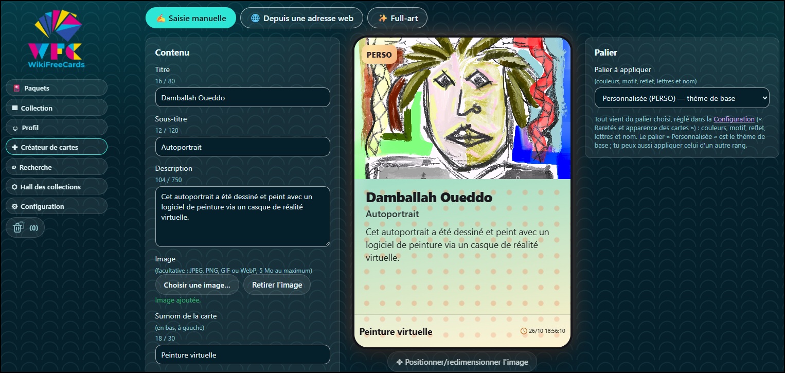
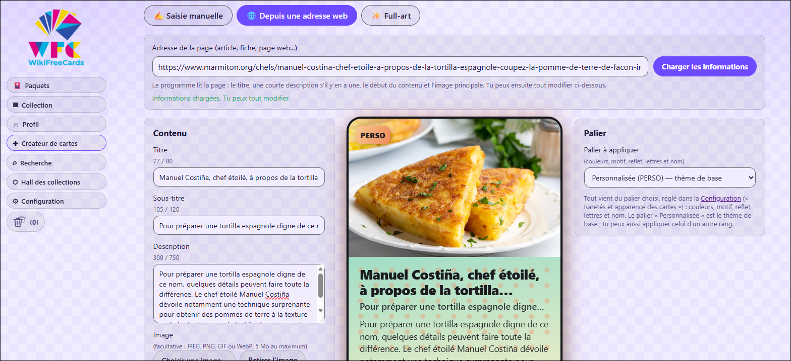
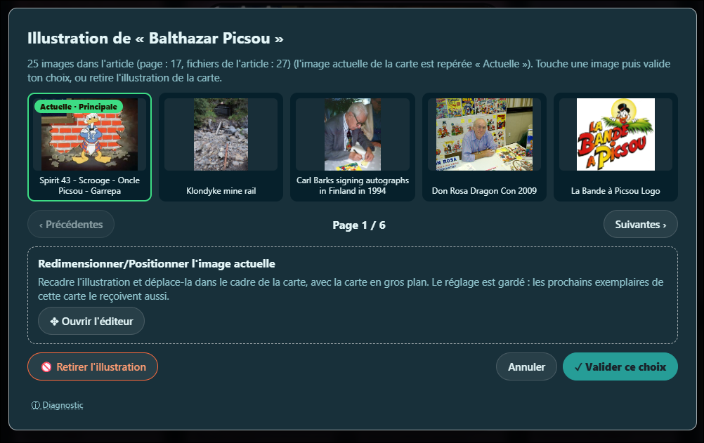

Créer des cartes
Fabriquez vos propres cartes, donnez un éclat full-art à vos favorites et choisissez l'illustration qui vous plaît.
Une carte entièrement à vous
Le Créateur de cartes vous permet de composer une carte de A à Z. L'aperçu se met à jour au fil de la saisie.
- un titre (80 caractères au maximum), un sous-titre (120) et une description (750)
- une image facultative, au format JPEG, PNG, GIF ou WebP, de 5 Mo au maximum
- un surnom, affiché en bas à gauche de la carte (30 caractères)
- la date et l'heure, inscrites en bas à droite.
Vos créations reçoivent le palier Personnalisée (PERSO), dont l'apparence se règle dans la configuration. Vous pouvez aussi leur appliquer l'apparence d'un autre rang. Le bouton Positionner/redimensionner l'image ajuste le cadrage.


À partir d'une page web
Collez l'adresse d'une page (un article, une fiche, n'importe quelle page web), puis cliquez sur Charger les informations. Le logiciel récupère le titre, la courte description s'il y en a une, le début du contenu et l'image principale. Tout reste modifiable ensuite.
Cette fonction ne marche pas avec tous les sites internet.


Le full-art, comme les cartes brillantes d'autrefois
Vous vous souvenez des cartes brillantes des albums de notre enfance ? Le full-art reprend cette idée et peut s'appliquer à n'importe quelle carte de votre collection.
- Choisissez la cartedans la liste de votre collection.
- Combinez deux calquesun « Zuul » (par exemple un cadre doré) et un « Gozer » (par exemple des étoiles filantes). Dix modèles de chaque sont proposés.
- Ajoutez jusqu'à trois effetsparmi douze : holographique, paillettes, reflet doré, prisme, aurore boréale, galaxie, éclair de lumière, rayons arc-en-ciel, braises, cristal, chrome liquide et néon pulsé.
- Confirmezle logiciel vous demande une confirmation avant d'appliquer le full-art.
Une opération définitive
Une fois le full-art appliqué, la carte ne peut plus revenir à son état d'origine : on ne peut ni retirer le full-art, ni modifier la carte.
Changer l'illustration d'une carte
L'image retenue pour une carte ne vous plaît pas ? Une petite icône sur la carte affiche toutes les images présentes dans l'article de Wikipédia. Parcourez-les page par page, choisissez celle que vous préférez et validez.
Vous pouvez aussi retirer complètement l'illustration.
Recadrer une image mal centrée
Les illustrations des articles sont souvent mal centrées sur les cartes, ou n'apparaissent pas alors qu'elles existent. Un petit éditeur visuel, de type WYSIWYG (« ce que vous voyez est ce que vous obtenez »), permet de redimensionner l'image et de la déplacer dans le cadre de la carte, affichée en gros plan.
Le réglage est conservé : les prochains exemplaires de la même carte en profitent aussi.

